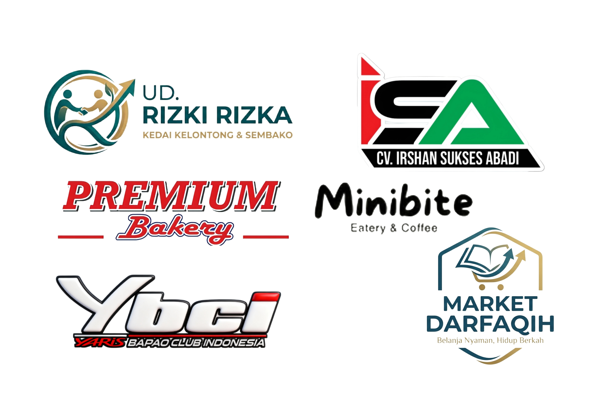

Kami hadir untuk membantu pengusaha lokal Aceh memiliki website dan aplikasi Android profesional dengan biaya yang jujur dan terjangkau.
Bawah Tangga Production lahir dari rasa kagum dan kecintaan mendalam terhadap kultur serta potensi luar biasa Bumi Serambi Mekkah. Meski tidak lahir di sini, Aceh telah menjadi rumah bagi kami untuk tumbuh dan berkarya.
Kami melihat banyak produk unggulan UMKM Aceh yang luar biasa, namun seringkali terkendala oleh biaya agensi digital yang selangit. Itulah misi kami: Menjadi jembatan digital dengan "Biaya Pasti Lebih Murah".
Bbagi kami, memajukan ekonomi Aceh bukan soal di mana kita lahir, tapi soal ke mana hati kita mengabdi.
Klik panah atau geser gambar untuk melihat karya kami.
Pembuatan website responsif mulai dari landing page hingga toko online yang SEO-friendly.
Transformasi bisnismu ke dalam aplikasi Android yang user-friendly dan fungsional.
Pendampingan transformasi digital agar produk lokal Aceh siap bersaing di kancah nasional.
Terima kasih kepada para pemilik usaha dan member yang telah mengamanahkan transformasi digitalnya bersama Bawah Tangga Production.
